LLaDA-MedV: Exploring Large Language Diffusion Models for Biomedical Image Understanding
Medical AI (CVPR 2026). 首个生物医学掩码扩散 VLM：从固定长度全掩码画布迭代填空，长度成为输入超参而非 EOS 早停；开放式对话领先 ARM、闭合式 VQA 三连 SOTA（84.93/92.31/95.15）。
领域：Medical AI · 掩码扩散语言 VLM
Medical AI 专题跨会议医学 AI 深读 · CVPR 2026 + NeurIPS 2025
本专题单列医学 AI 论文，覆盖医学 VLM、多模态理解、放射报告生成、3D 影像分割、体积 CT 基础模型、外科视频、数字病理与临床评测基准。每篇仍按论文原文、PDF、Supplement 与项目主页做结构化深读。
专题聚合 CVPR 2026 与后续跨会议医学 AI 工作；主目录只保留非医学论文流，医学论文在此按子话题生成卡片与状态表。所有 completed 页面均使用本地 PNG 图表。
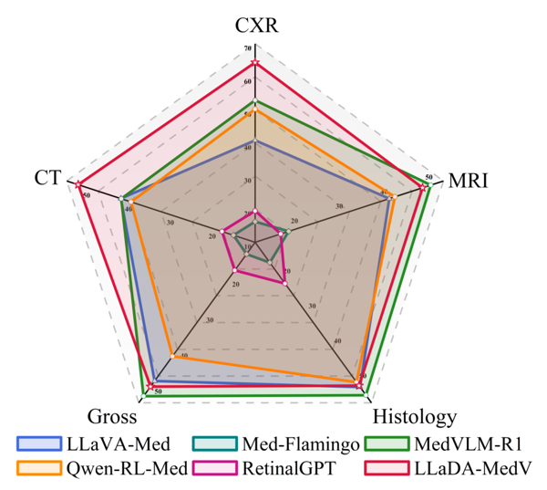
Medical AI (CVPR 2026). 首个生物医学掩码扩散 VLM：从固定长度全掩码画布迭代填空，长度成为输入超参而非 EOS 早停；开放式对话领先 ARM、闭合式 VQA 三连 SOTA（84.93/92.31/95.15）。
领域：Medical AI · 掩码扩散语言 VLM
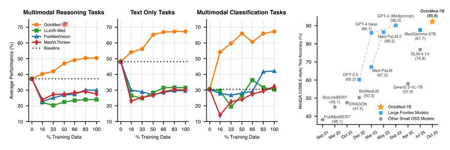
Medical AI (CVPR 2026). 当大家忙着发明新损失、堆 RL、上更大 backbone 时，OctoMed 把赌注全压在「喂什么数据」上：从强 teacher（DeepSeek-R1 / GPT-4o）蒸馏带推理轨迹的样本、用拒绝采样只留答对的轨迹，把规模推到 800 万样本 / 68 亿 token（目前最大医学多模态推理数据集），只做监督微调就把 7B 学生（Qwen2.5-VL）调到跨分布开源 SOTA，多模态分类反超它的 teacher GPT-4o（67.29 vs 53.96）、整体压过大它 4 倍的 MedGemma-27B。三条机制：每题多条正确轨迹（1→16）当正则化、把 MedQA 峰值从 75.16 抬到 85.01（比多训 epoch 更值）；CoT 利于推理、direct 利于感知分类；不同长度轨迹混训涌现出「按题难度自校准推理长度」——难题写长、易题写短，无显式监督。
领域：Medical AI · 医学多模态推理的「数据配方」：纯 SFT 蒸馏 + 拒绝采样多轨迹

Medical AI (CVPR 2026). 从 Qwen3-VL-8B 后训练、仅用公开数据的开源医学多模态大模型：把“看懂影像”和“框出病灶”这对数据经济学相反的需求，拆成四阶段渐进后训练——18.5M 低分辨率（768²）先打底跨模态对齐，再升到 1280² 注入 grounding，指令微调对齐问答口吻，最后 GRPO 强化。RL 阶段引入纯几何、可验证的 bounding-box 奖励（对角线归一 L1 + GIoU + 匈牙利匹配 + FP/FN 惩罚），只打磨空间精度而不毒化语言。MedMO-8B-Next 在 VQA 均分 72.7%、grounding 六任务均分 56.8（最强基线 17.2），DeepLesion 上 40.5 IoU 对多个基线的 0.00。
领域：Medical AI · 医学多模态大模型 / 理解 + grounding 的四阶段后训练
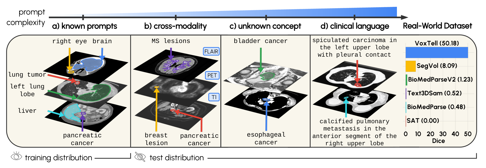
Medical AI (CVPR 2026). 把文本融合从 MaskFormer 的“末端一次点积”改成“每个解码尺度都融一次 + 深监督”：62K+ CT/MRI/PET、1087 概念上训练，11 个未见数据集零样本平均 Dice 70.85（次优 SAT 51.23），真实放射报告整句提示下 50.2 而 SAT 仅 0.0。
领域：Medical AI · 文本提示 3D 医学分割 / 多尺度视觉-语言融合
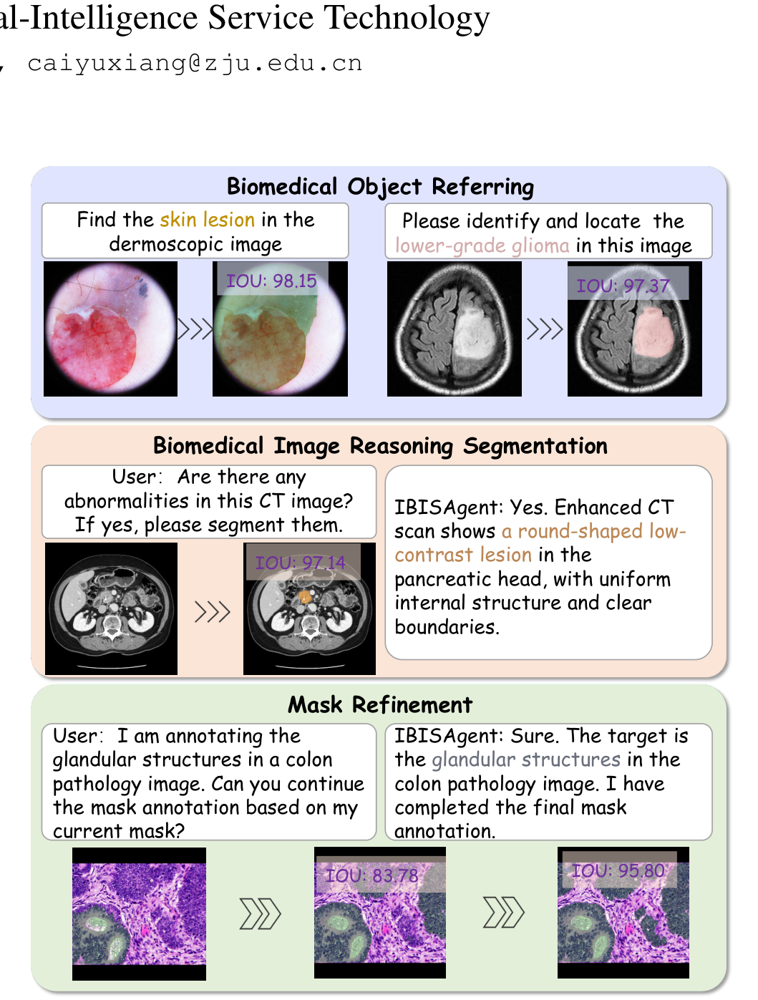
Medical AI (CVPR 2026). 不改 MLLM 架构、不引入隐式 <SEG> token：把生物医学分割重写成多步 Markov 决策——模型交替吐 <think> 推理与 <action> 文本点击坐标(Target,±1,Coordinate2d)，调用冻结的 MedSAM2 把点击变 mask、半透明叠回原图当观测，一点一看迭代精修。两段训练：冷启动 SFT(456K 自动模拟点击轨迹) + GRPO(无 KL) RL 配五类细粒度规则奖励(格式/答案/区域点击放置 正点落FN负点落FP/渐进IoU单调不降/轨迹长度)。基座 Qwen2.5-VL-7B、16×A100。三测试集 IoU 全面领先(域内 85.58、域外 80.63、外院 72.09，对手最高仅 50.74)，去掉细粒度奖励 IoU 崩到 11.77；代价是 ~3× 推理延迟。
领域：Medical AI · 像素级视觉推理智能体 / 把分割重写成多步 MDP
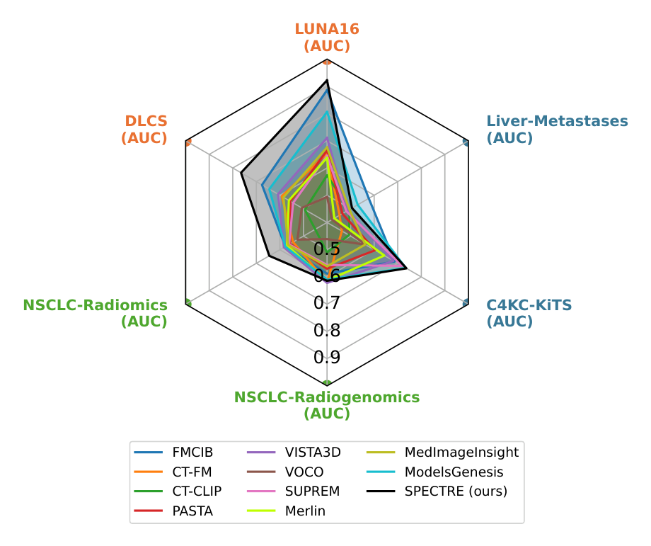
Medical AI (CVPR 2026). 首个纯 transformer 的体积 CT 基础模型：把算不动的 3D 全局注意力拆成“局部 ViT 24 层窗口内细看（代价随窗口数线性）+ 全局 ViT 4 层在窗口描述子上做全注意力（G≪m 故廉价）”，配各向异性 patch / 3D RoPE，先 DINOv3 式自监督再 SigLIP 对齐放射报告。仅用公开 CT 数据 229,619 序列，6 个生物标志物基准冻结-kNN 4/6 第一，CT-RATE 零样本检索 Recall@5 17.5（CT-CLIP 仅 2.9）。
领域：Medical AI · 体积 CT 基础模型 / 两级 3D Transformer + 视觉-语言对齐
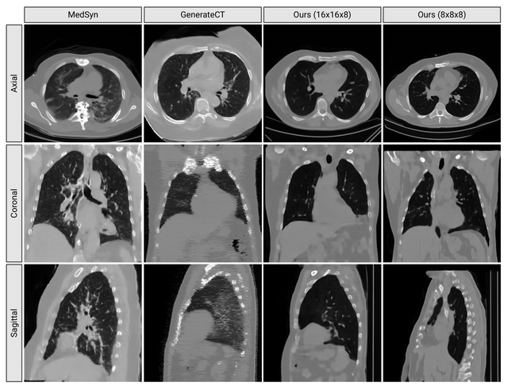
Medical AI (NeurIPS 2025). 把 3D 医学 VLM 的瓶颈从「语言主干大小」重新定位到「体素 token 的保真与可扩展」：3D Haar 小波频域压缩 + 因果 3D 卷积 + lookup-free 量化 + 三阶段课程，在 >300 切片上不增显存地泛化，报告生成临床 F1 +40%、text-to-CT 的 FID −75%。
领域：Medical AI · 3D 医学影像 VLM tokenizer / 小波频域 + 因果卷积 + LFQ + 三阶段课程
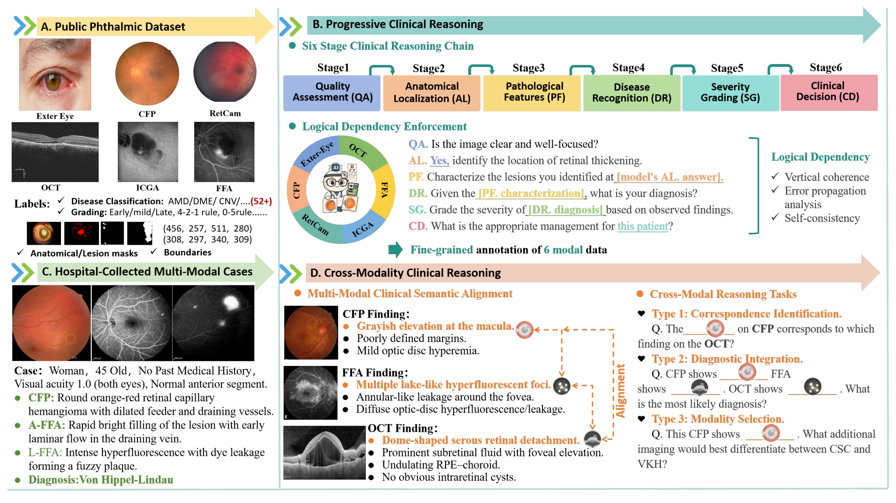
Medical AI (CVPR 2026). 把眼科诊断从“一堆独立选择题”改造成“带因果依赖的六阶段推理链（IQA→AL→LC→DD→SG→CD）+ 跨六模态对齐推理”，再叠难度分层与不确定性感知（UAS/ECE）打分：26,415 张专家核验图、177,868 VQA、52 病、51 个公开数据集。一个 Chain Completion Rate 就把缺陷逼现——21 个 MLLM 里最强的 GPT-5 单步均分 76.24%，六步全对率却仅 24.47%，无一模型超过主治医师（79.91%）。
领域：Medical AI · 眼科诊断推理基准 / 六阶段带依赖推理链 + 跨模态对齐评测
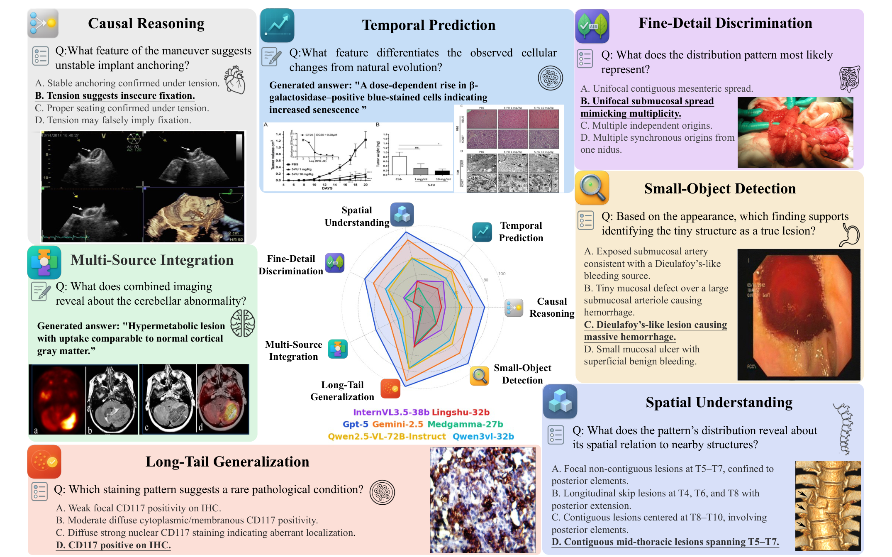
Medical AI (CVPR 2026). 首个对临床复杂推理做细粒度（七维）能力分解的医学多模态基准：把“医学多模态推理”这一个总分拆成 3 视觉（小目标检测/细节判别/空间理解）+ 4 推理（时序预测/因果推理/长尾泛化/多源整合）共七维，配 MCQ 正确率 + 开放题四维加权 LLM 打分（视觉准确性/真值正确性各权 4、一致性/连贯性各权 1）的双轨协议。20,653 道题源自真实期刊病例，覆盖 11 系统 × 12 模态，经专家+模型两阶段审查。18 个模型评测：GPT-5 居首（MCQ 57.81/开放 48.70），但医学微调模型并不稳定优于通用模型、长尾泛化全场最难。
领域：Medical AI · 医学复杂多模态推理评测基准 / 七维能力分解 + 双轨打分
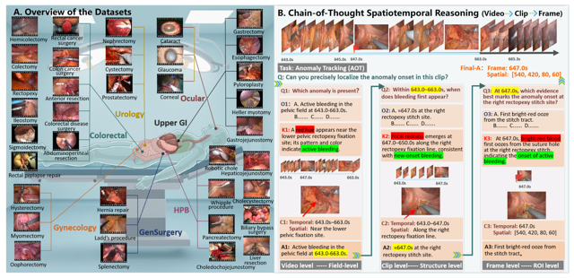
Medical AI (CVPR 2026). 首个跨专科手术视频 CoT 推理基准：把大时空问题拆成“视频级→片段级→帧级”三阶段（Q1→Q2→Q3，上一级 Answer 进下一级条件），每级用五元组 Question→Option→Knowledge→Clue→Answer 标注，把 reason-then-decide 显式化。7 专科 35 术式 2,841 视频、19,345 主问题 + 59,177 子问题，评 10 个 MLLM × 5 维 × 三档（BL/KE/FC）。最尖锐的发现：主问题答对、子步骤大面积答错（GPT-5 主 87.58% 但 Q3 仅 50.51%，Claude 主 87.54% / Q3 30.44%）——高准确率多是捷径而非真推理。
领域：Medical AI · 手术视频时空推理 / Chain-of-Thought 评测基准
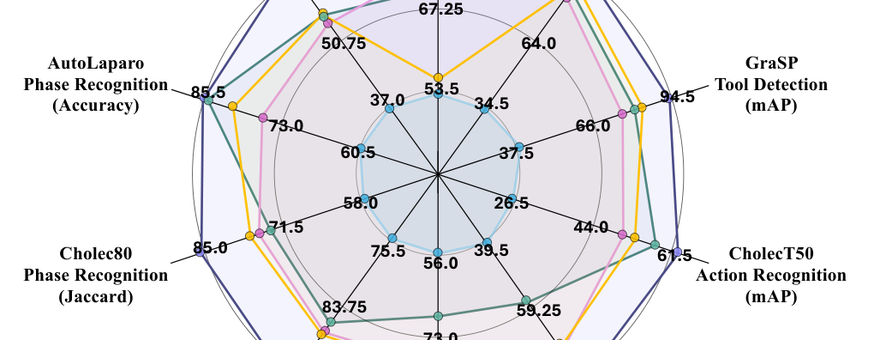
Medical AI (CVPR 2026). 私有手术数据喂不饱基础模型，LEMON 改走纯公开路线：从 YouTube 爬约 1.8 万段视频，用一条多级 curation 流水线（视频→帧→区域逐粒度剔非手术内容）削到 4194 段/938h/85M 帧/35 术式，是目前最大的开放手术数据集。基础模型 LemonFM 在 DINO 自蒸馏上加一路“增强蒸馏”——把同术式他人最近邻帧 + 时间相邻帧也当正视图，显式训入跨病人/跨帧不变性（3× 距离阈值为质量旋钮）。线性探测+全微调双协议在 4 任务 6 数据集全面领先：相位 Jaccard 最高 +9.5pp、分割 +10.3pp mDice，且 50% 标注微调仍压过别人 100%。
领域：Medical AI · 手术内窥镜大数据集 + 增强自蒸馏基础模型
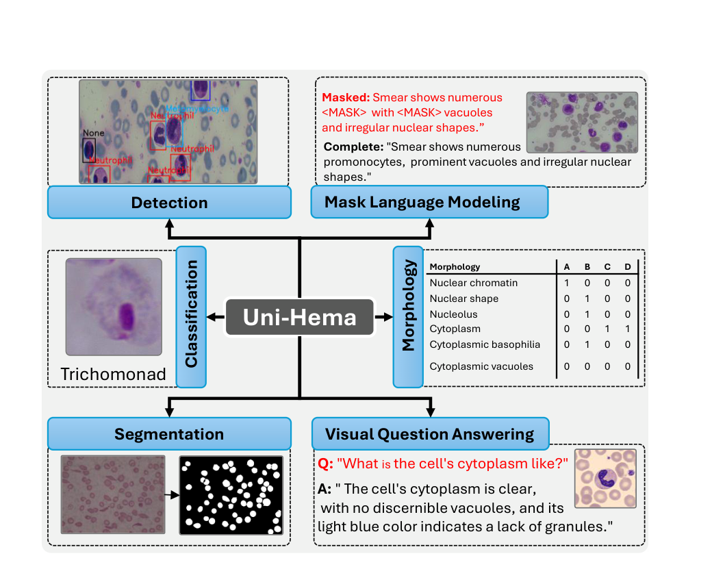
Medical AI (CVPR 2026). 首个面向数字血液病理（DHP）的统一视觉-语言模型：一套共享主干（ResNet-50 + DINO-DETR 编解码 + T5 文本编解码），靠 Hema-Former 把“层级化视觉特征 + 任务相关 query”在不同粒度上分流——CMF 跨模态融合（语言）、TGVR top-K 文本调制（检测/形态学）、SCFE 文本无关单细胞特征（分类）、QGMF 用 Einstein 求和把病灶 query ⊗ 像素特征生成分割 logits（像素）。46 个公开集（≈70 万图 + 22K QA + 7K MLM）单卡 RTX 4090 约 8 天、6 阶段渐进冻结联合训练一次。检测 mean mAP50 61.1、分类 mean F1 92.5、形态学 77.2（AttriDet 62.6），未见域分类 mean F1 90.8 居首；代价是小样本任务被单训模型反超、分割边缘略糊。
领域：Medical AI · 数字血液病理 / 统一多任务多模态模型
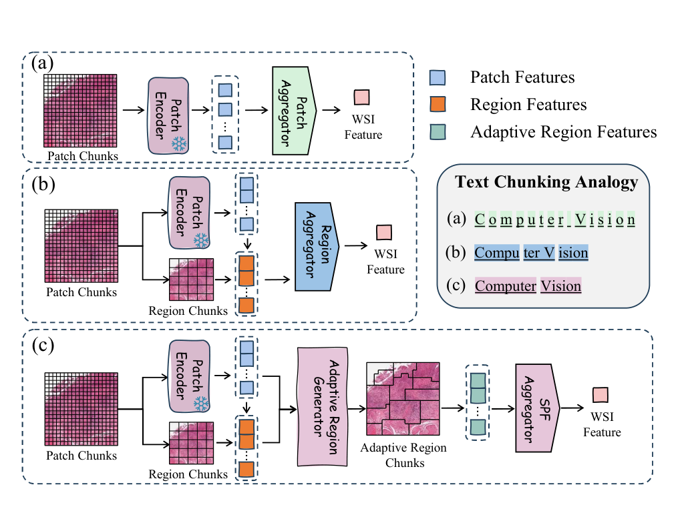
Medical AI (CVPR 2026). 把 WSI 的“怎么切区域”从固定网格改成可学习的软路由：soft inclusion 软归属 + top-3 候选 + “语义×空间”得分重指派出形态连贯的自适应区域（像 NLP 的词级 token），Region Structuring Loss 把“期望排名”拉向 E*=0.5 顶住塌缩，SPF 用“覆盖先验⊕门控语义”聚成 WSI/ROI 表示；再用 iBOT 自监督→RNA→蛋白 InfoNCE 的分子引导课程。仅约 1/10 数据、34,277 WSI，33 任务平均分子预测 LR 69.5、生存 C-index 58.0 双双领先，形态分类追平最强 TITAN。
领域：Medical AI · 病理全切片基础模型 / 自适应区域 + 分子引导对齐
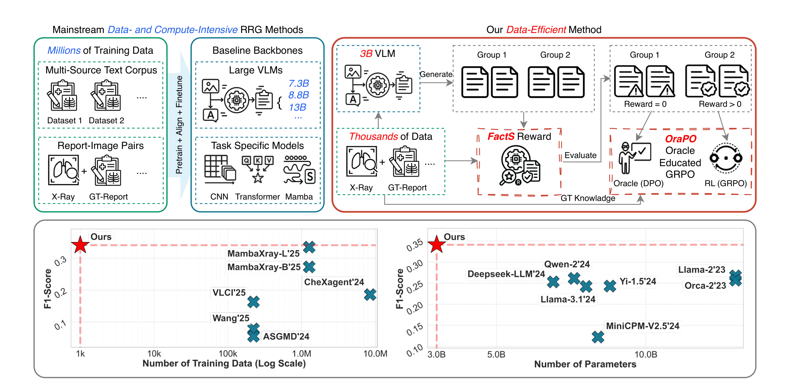
Medical AI (CVPR 2026). 首个把 DPO 耦合进 GRPO 的 RL 算法：GRPO 在 RRG 上一上来约 30% 的 group 全 0 奖励、advantage≈0、梯度近乎消失，OraPO 把这些“失败 rollout”当现成负例、以 ground-truth 为正例做轻量 DPO，正好补上 GRPO 缺的梯度；按 per-prompt 的 Zero-Reward Rate 自适应退火在 GRPO/DPO 间切换（“先教育后探索”飞轮），配偏 recall 的 FactScore 事实级稠密奖励。单阶段纯 RL、3B Qwen2.5-VL、1K 样本、4×A10，CheXpert Plus F1 0.341 / Recall 0.832、MIMIC-CXR F1 0.357，较前 SOTA 数据少 2–3 个数量级。
领域：Medical AI · 数据高效放射报告生成 / Oracle 教育式 GRPO + 事实级奖励
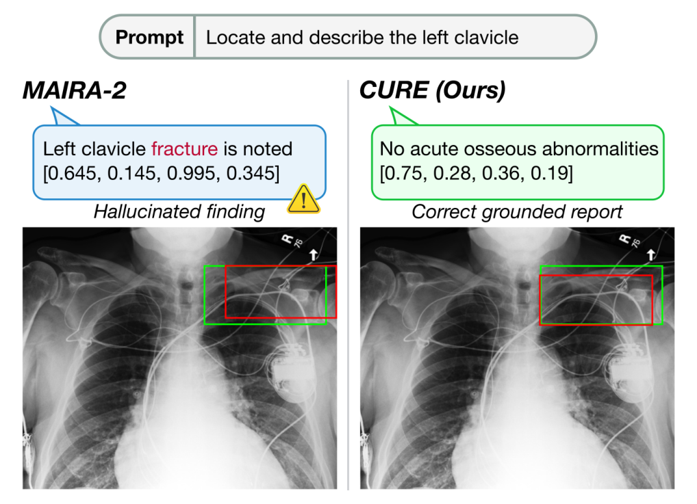
Medical AI (CVPR 2026). 不加任何新数据，只动训练方法学：把 finding-generation 重构成逐区域、正常异常都监督的 AGRG（把异常基率从 phrase-grounding 的 ≈1 拉回真实值），再用误差归一化课程 p_i=e_i/∑e_j 把稀缺采样预算动态倒向短板。一块 LoRA 微调的 MedGemma-4B：解剖级定位 IoU 0.249→0.601（翻倍），六区域异常幻觉 26.5%→8.78%（−18.6pt）。
领域：Medical AI · 可靠放射报告生成 / 误差感知课程 + 解剖级报告重构
| 论文 | 奖项 | 类别 | 状态 | 素材/核验 | 阅读 |
|---|---|---|---|---|---|
| LLaDA-MedV | Medical AI (CVPR 2026) | Medical AI (CVPR 2026) | 完成 | 1 图 · 6 表 · 公式passed | Blog Digest |
| VoxTell | Medical AI (CVPR 2026) | Medical AI (CVPR 2026) | 完成 | 5 图 · 4 表 · 公式passed | Blog Digest |
| SPECTRE | Medical AI (CVPR 2026) | Medical AI (CVPR 2026) | 完成 | 7 图 · 6 表 · 公式passed | Blog Digest |
| X-PCR | Medical AI (CVPR 2026) | Medical AI (CVPR 2026) | 完成 | 2 图 · 6 表 · 公式passed | Blog Digest |
| SurgCoT | Medical AI (CVPR 2026) | Medical AI (CVPR 2026) | 完成 | 4 图 · 4 表 · 公式passed | Blog Digest |
| Uni-Hema | Medical AI (CVPR 2026) | Medical AI (CVPR 2026) | 完成 | 4 图 · 4 表 · 公式passed | Blog Digest |
| LEMON | Medical AI (CVPR 2026) | Medical AI (CVPR 2026) | 完成 | 5 图 · 6 表 · 公式passed | Blog Digest |
| OctoMed | Medical AI (CVPR 2026) | Medical AI (CVPR 2026) | 完成 | 9 图 · 4 表 · 公式passed | Blog Digest |
| MedMO | Medical AI (CVPR 2026) | Medical AI (CVPR 2026) | 完成 | 4 图 · 6 表 · 公式passed | Blog Digest |
| Med-CMR | Medical AI (CVPR 2026) | Medical AI (CVPR 2026) | 完成 | 3 图 · 3 表 · 公式passed | Blog Digest |
| OraPO | Medical AI (CVPR 2026) | Medical AI (CVPR 2026) | 完成 | 2 图 · 7 表 · 公式passed | Blog Digest |
| CURE | Medical AI (CVPR 2026) | Medical AI (CVPR 2026) | 完成 | 5 图 · 9 表 · 公式passed | Blog Digest |
| IBISAgent | Medical AI (CVPR 2026) | Medical AI (CVPR 2026) | 完成 | 7 图 · 6 表 · 公式passed | Blog Digest |
| CARE | Medical AI (CVPR 2026) | Medical AI (CVPR 2026) | 完成 | 6 图 · 8 表 · 公式passed | Blog Digest |
| BTB3D | Medical AI (NeurIPS 2025) | Medical AI (NeurIPS 2025) | 完成 | 4 图 · 8 表 · 公式passed | Blog Digest |